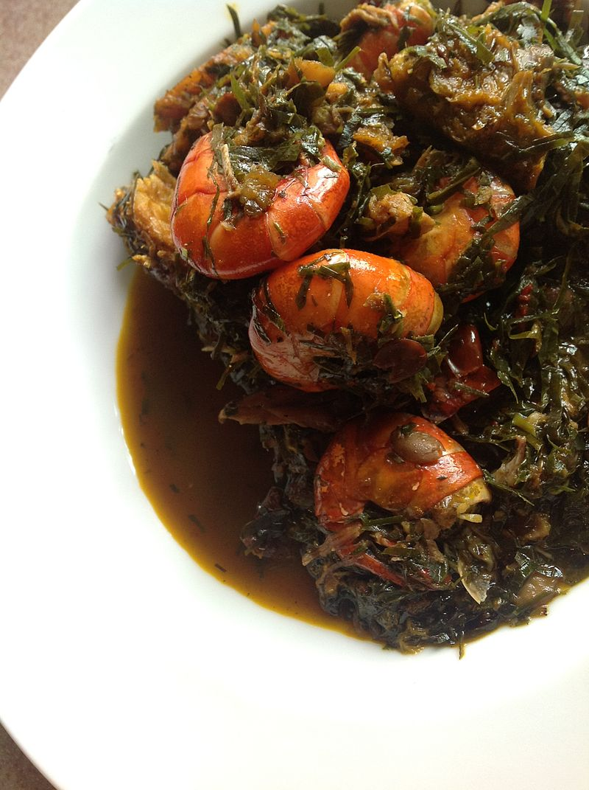
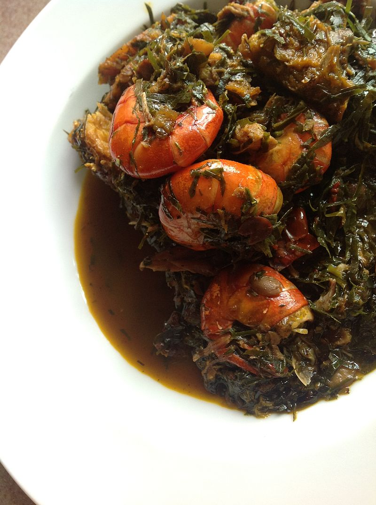
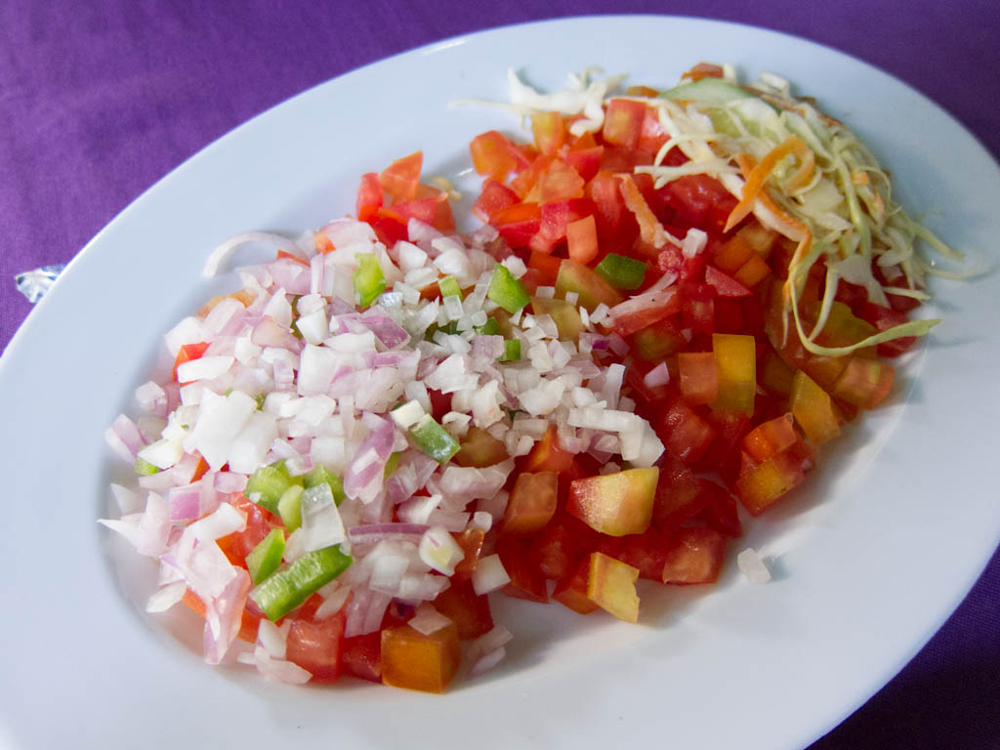
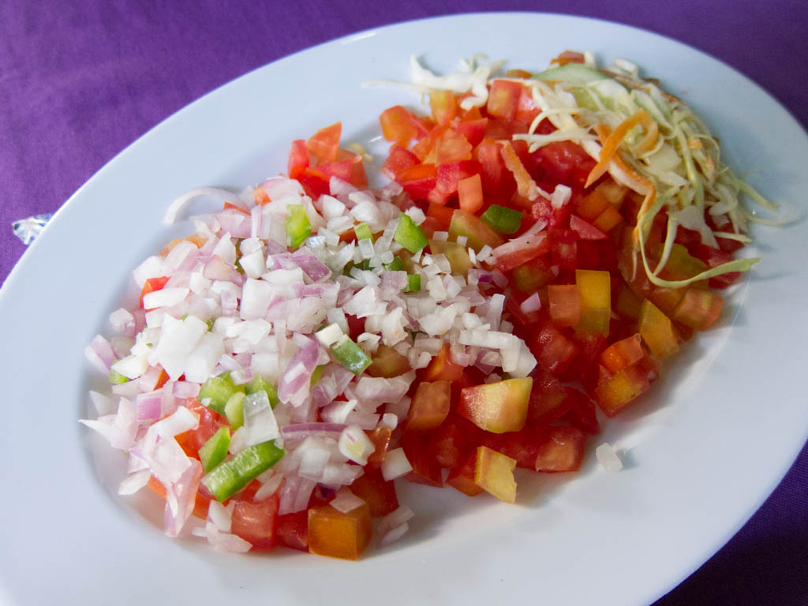

List of African Dishes
There is a list of dishes found in African cuisine, a generalized term collectively referring to the cuisines of Africa. The continent of Africa is the second-largest landmass on Earth, and is home to hundreds of different cultural and ethnic groups. This diversity is also reflected in the many local culinary traditions in choice of ingredients, style of preparation, and cooking techniques.
 

 
